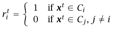
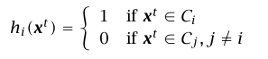
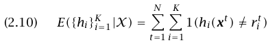
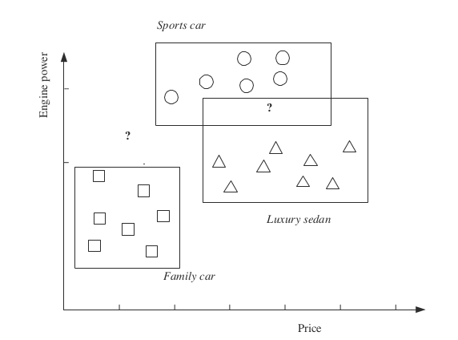

Chapter1 : Introduction
Machine learning consist of two parts:
- learn from experience(history data)
- adapt to environments
In past, I usually confuse Machine Learning and Data Mining. Data Mining is an application of machine learning methods to large databases. But machine learning is also a part of artificial intelligence. Something is called to be "Intelligent" means it has the abiliy to learn and adapter to changes.
I don't think machine learning is just the execution of a computer program to optimize the parameters of a model. It should also tell us how to select or create the model. Learning should not merely optimize the parameters of an known formular(model,hypothesis).
Problem:
1. What kind of learning algorithm (Supervised/Unsupervised/Reinforement) do you think is most suitable for pattern formation (e-Mouse is used) task in our lab.? If we change the task to navigation issue?
A:I think we should understand what is supervised/unsupervised/reinforemen learning formally at first.(To be added). Reinforement is the best choice I think. We don't have any history data to make prediction and the emouse won't get together automatically in the form of letter A. Instead, each emouse should take a sequence steps to form a pattern. It is what reinforement learning does.
Chapter2: Supervised Learning
2.1 An example: Label family car automatically.
Training Data: a set of examples cars.Each of them has a label.
Input Representation: Here,we separate a family car from other cars are the price and engine power. But do we have some general method or idea to represent input? It is very important to know which attributes(or dimension) of data play main role in machine learning.
Some symbols:
- $\mathcal{H}$: hypothesis class. It is a model with parameters unknow.
- $h$: hypothesis. $h \in \mathcal{H}$. It is a model with known parameters.
- $X$: tranning set.
- Empirical error : the proportion of training instances where predictions of $h$ do not match the required values $r$ given in $X$ $$ E(h|\mathcal{X}) = \sum_{t=1}^{N}(h(x_t) \neq r_t) $$
We know that there maybe infinite $h \in \mathcal{H}$ whose empirical error is zero(or maybe none, see below). How to select the best one? --The hypothesis with max margin
So here is our general steps:
- find the most specific hypothesis S that is the tightest boundary that include all the positive example and none of the negative example.
- find the most general hypothesis G that is the largest boundary that include all the positive example and none of the negative example. (Do we have some more mathematical definition of specific hypothesis and general hypothesis??)
- find a way to compute margin
- choose the hypothesis $h$ from hypothesis class $\mathcal{H}$ with max margin
We will know that SVM(support vector machine) will produce a hypossis with largest margin. What is the relationship between them?
In the end of this example. It tell us that we assume there exist $h \in \mathcal{H}$ with $E(h|\mathcal{X})$ is 0.But how we can always choose a hypothesis $\mathcal{X}$ that include this $h$? Just as mentioned above, machine learning should tell us how to create/select/produce a hypothsis class(model with unknown parameters), not merely optimize parameter with a known model.
2.2 Vapnik-Chervonenkis(VC) Dimension.
Shatter : A classification model $f$ with some parameter vector $\vec{\theta}$ is said to "shatter" a set of data point , if, for all assignments of labels to thoses points, there exists a $\theta$ such that model $f$ make no error when evaluating that set of data points.
$\mathcal{H}$ : is the hypothesis class.
The maximum number of pointers that can be shattered by $\mathcal{H}$(there exist $h \in \mathcal{H}$ can separate $\mathcal{C}$ perfectly(with no empirical error)) is called the Vapnik-Chervonenkis(VC) dimension of $\mathcal{H}$, is denoted as$VC(\mathcal{H})$ and measure the capacity of $\mathcal{H}$
Why Vapnik-Chervonenkis(VC) dimension is useful????
Reference on Vapnik-Chervonenkis(VC) dimension:
- http://en.wikipedia.org/wiki/Vapnik%E2%80%93Chervonenkis_theory
- http://en.wikipedia.org/wiki/VC_dimension
2.3 Probably Approximately Correct (PAC) Learning
2.3.1 Definition
Probably Approximately Correct (PAC) Learning provide us a method to caculate how many examples(training data) do we need if we use tightest hypothesis.
The confidence probability $1-\delta$ is the factor of our certainty on the conculsion : error probability at most $\epsilon$
In Probably Approximately Correct (PAC) learning, given a class, $\mathcal{C}$, and examples drawn from some unknown but fixed probability distribution, $\mathcal{p(x)}$, we want to find the number of examples, $N$, such that with probability at least $1 - \delta$, the hypothesis $h$ has error at most $\epsilon$, for arbitrary $\delta \le 1/2$ and $\epsilon > 0$
$$P\{\mathcal{C} \Delta h \le \epsilon \} \ge 1 - \delta$$
where $\mathcal{C} \Delta h$ is the region of difference between $\mathcal{C}$ and hypothesis $h$.
2.3.2 Explanation:
We know that $h$ is the tightest hypothsis which is just a boundary around the known(or selected) positive points. And all points(examples) are drawn from an unknown but fixed probability distribution. We can't make sure that $\mathcal{C} \Delta h$ is less that $\epsilon$.Instead, we give it a lower limit probability : $1 - \delta$. This is why the name of this learning is :Probably Approximately Correct
- Approximately means : we use a (tightest) hypothesis to approximate the absolutely correct class: C
- Probably means : we can't make sure of that. We can only give a lower limit probability : $1 - \delta$
2.3.3 Derivation:
$\mathcal{C} \Delta h < \epsilon$ can be derived from each strip is $ < \epsilon/4$.
Then we know that $h$ is totally determined by points(examples).
Sub-conclusion: Making degree of strip is T, the event:
$T \geq \epsilon/4$ == no point(example) is in the region of $\epsilon/4$ == all points fallen in the region out of $\epsilon/4$
Prove: Assuming that degree of strip $T \geq \epsilon/4$ and there is a point fallen into this region, the tightest hypothessis will contain this point. Then T should smaller than $\epsilon/4$. It conflict with our assume. Approved
Then we can get $$ N \geq \frac{4}{\epsilon}ln{\frac{4}{\delta}} $$
2.3.4 Problems:
Q: On page $P69$ of Chapter 2, the author gives an example about how to calculate the number of samples needed to satisfy the miss value $\delta$. The author uses upper bound $\epsilon / 4$ to measure the error, note in here $\epsilon / 4$ is the upper bound for one strip. Then the actually error, noted as $\alpha$, then $\alpha \le \epsilon$. Why not calculated by $(1 - \alpha)^N$ instead of $(1 - \epsilon / 4)^N$?
A: I think they could be fine. But method is this book are more strict. Because if $\alpha > 0, x > 0 $, $\alpha(1 - \frac{x}{\alpha})^n > (1-x)^n$
So if $4(1-\epsilon/4)^n \leq \delta$ then $(1-\epsilon)^n \leq \delta$
2.3.5 Conclusion:
I think the pac gives a us way to quantify the value of proximity between the underlying distribution and our hypothesis under a number of samples.
I don't think so. PAC tell us if we want to adopt tightest hypothesiss with confidence probability at least $1 − \delta$, a given point will be misclassified with error probability at most $\epsilon$
2.4 Noise
There are several interpretations of noise:
- Imprecision in recording the input attributes
- Errors in labeling the data point
- Additional attributes which we have not taken into account
2.5 Learning Multiple Classes
In general, we have K classes denoted as $C_i, i = 1,...K$ and input instance belongs to one and exactly one of them. The training set is now of the form: $$ \mathcal{X} = (x^t,r^t) _{t=1}^{N} $$ where $r$ has $K$ dimensions and :

In a K-class problem, we have K hypotheses to learn such that:

The total empirical error takes a sum over the predictions for all classes over all instance
REJECT instance which belong to
- no class
- more than one class
For example , ? is reject region

2.6 Regression
$$ \mathcal{X} = (x^t,r^t) _{t=1}^{N} $$ where $r^t \in R$
We use our model $g(x)$ to approximate the output.
2.7 Model selection and Generalization
Learning is ill-posed -- the data by itself is not sufficient to find a unique solution
For example, in classfication:
If data are pulled from a k-dimension dataset and each value of dimension is 0 or 1, there are at most $2^k$ different data points. And if each data point can belong to any class 0 or 1, there would be at most $2^{2^k}$ possible classfication result. We should to make some assumptions to have learning possible. The set of assuptions we make to have learning possible is called the inductive bias of the learning algorithm. The hypothesis class $\mathcal{H}$ is inductive bias.
Then we have one more question: How to choose the right bias? This is called model selection.
How to measure the rightness of a bias?In other words, how do we determine whether a Hypothesis class is good?
-
cross-validation: divide training set into two parts. One part is for trainning and the remaining is for validation. Given a set of possible hypothesis class $\mathcal{H}_i$, for each we fit the best $h_i \in \mathcal{H}_i$ on training set and the most accurate on the validation set is the best one.
-
test set : the error in test set is reported as the error of this hypothesis.
The model(inductive bias),or $\mathcal{H}$ is fixed by the machine learning system designer based on this knowledge of the application.
2.8 Conclusion
2.8.1 Training Set:
We have $$ \mathcal{X} = (x^t,r^t) _{t=1}^{N} $$ where if $r^t$ is :
- 0/1 for two-class learning
- K-dimensional binary vector for K>2 class classification
- a real value in regression
2.8.2 Model
Model we use in learning,denoted as $$ g(x|\theta) $$ where g() is the model, $x$ is the input, $\theta$ are the parameters.
g() define the hypothesis class $\mathcal{H}$,and a particular value of $\theta$ instantiates one hypothesis $h \in \mathcal{H}$
The model(inductive bias),or $\mathcal{H}$ is fixed by the machine learning system designer based on this knowledge of the application.
The hypothesis $h$ is chosen(parameters are tuned) by a learning algorithm using the training set, sampled from p(x,r)
2.8.3 Loss function: L():
To compute the difference between :
- desired output $r^t$
- our approximation $g(x^t|\theta)$
Approximation error or loss: $$ E(\theta|\mathcal{X}) = \sum_{t}L(r^t,g(x^t|\theta)) $$
- In class learning : L() check for equality or not
- In regression : distance.(For example, square of the difference)
2.8.4 Optimization procedure
To find $\theta^*$ that minimizes the total error $$ \theta^* = arg Min_{\theta}E(\theta|\mathcal{X}) $$
2.8.5 Conclusion
To be able to learn, the following conditions should be satisfied:
- the hypothesis class of g() should be large enough(but not too large) -- have enough capacity to include the unknown function.
- Enough training data to allow us to pinpoint the correct hypothesis from hypothesis class.In other word, enough trainning data to get the proper hypothesis parameters
- A good optimization method that finds the correct hypothesis given the training data.
Different machine learning algorithm differ either in :
- the models they assume
- the loss measures they employ
- the optimization procedure they use
Note : Here is our 3 possible direction to write paper!
- What is our model to determine reputation?
- What is our loss function?
- How to optimize our parameters??
Comments !